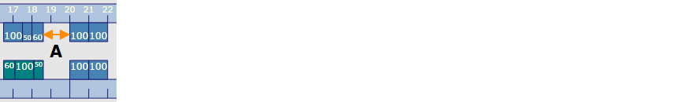

En este diálogo se determinan los criterios para el cálculo automático del plan de equipamiento.
- Distancia mínima
- Reticulación
Con esta opción se determina la separación mínima (A) entre varias estaciones. En el caso de que la pieza a doblar choque con otra estación de doblado, entonces se varía la distancia de la estación de doblado con la que choca la pieza hasta que no se produzcan más colisiones.
Fig.: Separación entre dos estaciones de doblado

Con esta opción se crea una reticulación para colocar las herramientas de doblado en un plan de estaciones. La colocación se refiere siempre a la posición izquierda de una estación de doblado.
NOTE: Las máquinas dobladoras Hämmerle tienen una reticulación mecánica fija de 50mm. Por ello, el valor de retícula para esas máquinas tiene que poder dividirse siempre por 50.